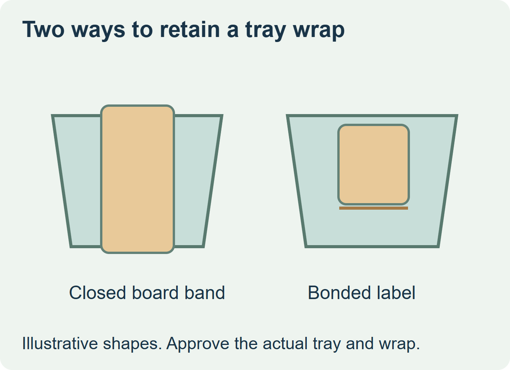
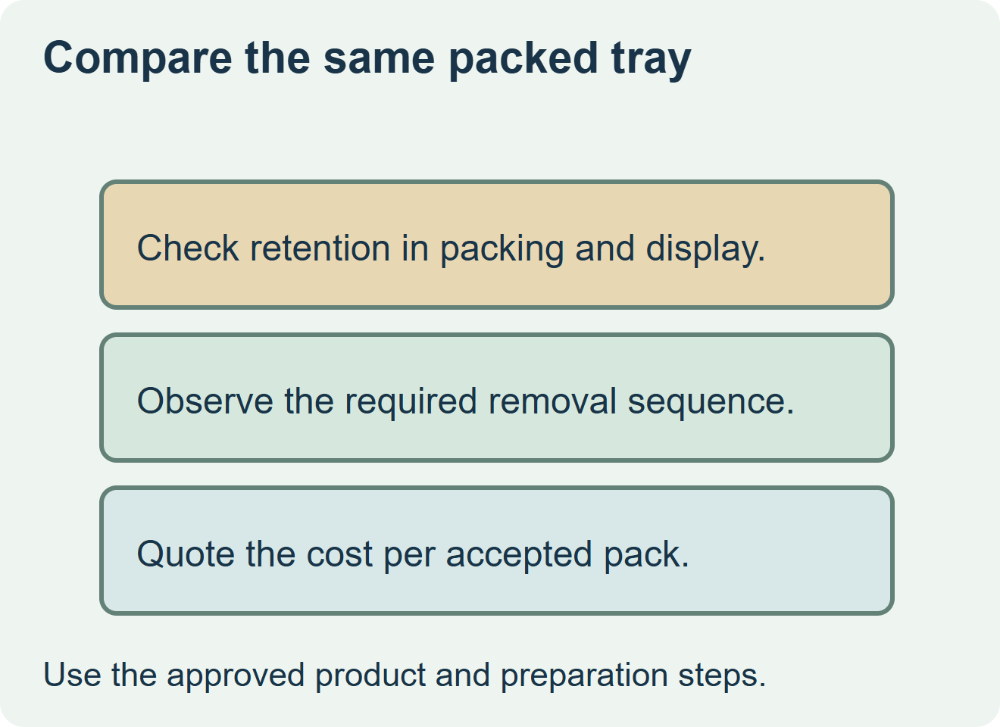

Choose a board sleeve if the finished tray retains it through handling and the shopper can remove it as intended. Compare an adhesive wrap when a loose sleeve moves out of position or the line requires a bonded format. Test both proposals on the same filled tray before comparing the cost of accepted packs.


Distinguish how each wrap stays attached
A board sleeve can rely on fit or a seam that closes the band. Some use adhesive at the seam without bonding the sleeve to the tray. An adhesive wrap uses a named landing area on the pack itself. Avery Dennison describes pressure-sensitive card as one alternative to a traditional ready-meal sleeve. Mantle illustrates a board sleeve that closes below the tray. Those examples give buyers two constructions to compare. Avery Dennison wrap label overview and Mantle tray sleeve example
| What to compare | Board sleeve | Adhesive wrap label |
|---|---|---|
| Retention | Fit, closure and ability to resist shifting or sliding off | Contact, lift and abrasion across the real landing surfaces. |
| Application | Load and close the sleeve around the filled tray | Confirm liner handling and compatible label application. |
| Consumer action | Confirm the sleeve comes off in the intended sequence | Confirm how the label releases if removal is required. |
| Quote basis | Printed sleeve, closure and application work | Printed label, liner, application and actual process losses. |


Use one pack test and one quote basis
Use the intended seal, fill and tray dimensions. Carry both samples through the same packing, cold handling and display route. Check whether the front and back panels stay where shoppers and staff expect them, then follow the approved opening and preparation steps. The food pack owner confirms those steps for the actual components.
Ask each supplier which sample represents production and list the application work and unusable pieces in the same quote. If the sleeve is stable and easy to remove, compare it on complete pack cost. If the bonded wrap solves shift or placement, release it only after the matching trial supports retention and removal.
Discuss the unresolved label requirement
Send a filled sealed tray, top and underside measurements, the surfaces available for contact, print field positions, the handling and removal sequence, and volumes by meal. Review food label options and prepare a label specification inquiry. The contact page opens an email draft and lists email or WhatsApp for attachments. Supply, proof options, testing, pricing and timing require project confirmation.